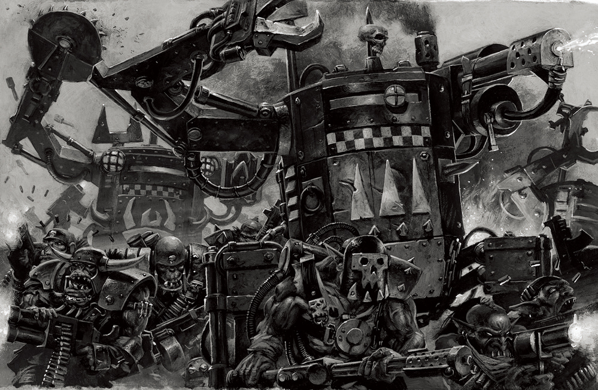
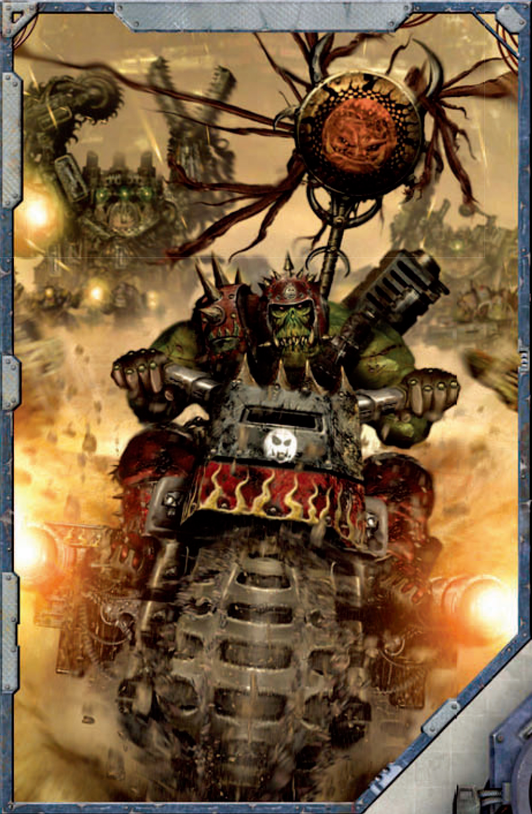

本文出处
《Rogue Trader - Into the Storm》
《Rogue Trader - The Navis Primer》
《Rogue Trader - The Koronus Bestiary》
《Rogue Trader - Living Errata》
1.1 增加兽人战斗摩托

译者：界域秘教徒 罗-穆-31
兽人属性
和人类角色一样，兽人的属性也是一次生成一个。然而，人类的属性都是以同样的方式产生的，即通过投掷2D10并在结果上加25，而兽人的每项属性都有不同的基本值。
| 兽人属性 | 2d10＋ |
|---|---|
| 武器技能 | 35 |
| 弹道技能 | 15 |
| 力量 | 35 |
| 坚韧 | 30 |
| 敏捷 | 20 |
| 智力 | 15 |
| 感知 | 20 |
| 意志 | 20 |
| 社交 | 15 |
起始承伤：投掷1d5+1，得出结果后与起始坚韧加值两倍的数字相加。在此情况下不考虑超自然坚韧。
起始命运点：投掷1d10，结果为1-5时是1命运点。结果为6-10时是2命运点。
特质与能力
基础技能
兽人的基因中蕴藏着本能的基础语言和文化知识，好战的性格是所有兽人的天性。
所有兽人角色获得常识（兽人）（智力）、恐吓（力量）和口语（兽人）（智力）作为受训基础技能。
梆硬 ‘Ard
兽人具有极强的恢复力，他们的身体能够承受足以杀死人类的伤害并存活下来，即使是最严重的伤口也能迅速恢复，让他们在几天内重新投入战斗。
兽人获得了超自然坚韧（x2）和稳固特质，以及铁颚和皮糙肉厚天赋。此外，由于兽人强健的体质，所有治疗兽人伤势的医护检定都会获得+20加值。
为战而生 Made Fer Fightin’
兽人的天性就是战斗，他们从诞生起就无师自通了发动战争的能力。
兽人获得狂怒突击和异形武器训练（兽人）天赋。
俺寻思行 Make It Work
由于帝国仍然困惑不解的原因，兽人似乎能使他们本该无法运作的技术自行发挥作用。
任何具有不可靠品质的兽人武器在被兽人使用时忽略此品质。
强权即公理 Might Makes Right
在兽人的社会中，体型和权威是同义词，块头更大的兽人自然被比他们小的同类视为领袖。兽人明白，只有那些有实力的人才会得到尊重。
当与其他绿皮（屁精、鼻涕精、其他兽人）打交道时，兽人角色可以使用恐吓技能来执行指挥技能的所有正常效果，对相当于他的力量加值的下属绿皮的数量施加影响。当与非绿皮生物打交道时，兽人不会得到这个加值。
暴群统治 Mob Rule
兽人在自己的同类面前会变得更加自信和残暴。
在距离兽人角色10米的范围内，每增加一个兽人（ork），该角色的意志就会在对抗恐惧和束缚的检定中增加+10加值。
非帝国人 Non-Imperial
该角色没有在人类中长大，对帝国的文化和历史知之甚少。人类的法律、传统、宗教和迷信对具有他来说是完全陌生的。
该角色在所有与人类帝国有关的常识、禁忌知识和学术知识的检定中受到-10减值。
兽人起源：氏族
所有兽人角色都可以从以下氏族中选择一项：
恶月
当与其他兽人交易时，恶月角色在所有的生计检定中获得+20加值，并且在任何与兽人商人交易或收购兽人装备的检定中获得+10加值。
血斧
血斧角色获得常识（帝国）（智力）作为一项受训高级技能，掩藏（敏捷）作为一项受训基础技能。
死颅
死颅角色获得科技使用（智力）或巧手诡计（敏捷）作为一项未受训的基础技能，并获得小跟班天赋。他们身上的蓝色涂料和各种护符、幸运符统统算作一种护身符：
护身符没有实际的加成。然而，当剧情发展需要在一个随机的角色身上发生一些不好的事情时，在GM的决定下，一个带着护身符的角色将被豁免。如果所有的角色都带着护身符，那么就由GM来选择哪些护身符是最有效的。
邪日
邪日角色获得驾驶（地面载具）（敏捷）或科技使用（智力）作为一项未受训的基础技能。
高夫
高夫角色获得+3力量。
蛇咬
蛇咬角色获得抵抗（毒素）天赋，并获得求生（智力）、追踪（智力）或驯兽（智力）作为一项未受训的基础技能。
兽人起源：怪咖砖家
除神经小子以外（他们已经很怪咖了）的兽人角色都可以从以下砖家中选择一项：
驾手
驾手获得驾驶（地面载具）（敏捷），或驾驶（飞行器或太空船）（敏捷）作为一项受训基础技能。
猎人
猎人获得追踪（敏捷）作为一项受训技能。
技师小子（怪咖小子）
技师小子获得科技使用（智力）作为一项受训技能，并获得＋5智力。
剧痛小子（怪咖小子）
剧痛小子获得医护（智力）作为一项受训基础技能，并获得＋5智力。
监工小子（怪咖小子）
监工小子获得驯兽（智力）作为一项受训基础技能。
布陷小子
布陷小子获得求生（智力）作为一项受训基础技能。
别和异形废话
该角色是一种外星生物，其他物种的人对他的看法混杂着恐惧和厌恶，而且在形态和思想上有很大的不同，与他的任何一种社交互动都是一个巨大的挑战。
该角色在与和自己不是一类物种的生物打交道时，所有基于社交的检定都会受到-20减值。同样，其他物种的人在与他打交道时，他们基于社交的检定也会受到同样的-20减值。这些减值不适用于与那些出于某种原因而信任他的人。最后，出现在人类船只上的任何异形都会让船员感到不安，而且随着谣言的传播，对异形的不满也变得更明显。一个或多个异形玩家角色持续出现在一艘船上，会使其他船员的士气下降2点。
受训VS本能
由于兽人掌握的大部分知识源于本能的遗传基因，而不是学到的东西，所以兽人的学习和发展问题就变得有点模糊不清了。兽人是否会自主学习，还是他们的技能会随着体魄的增加和年龄的增长而继续发展呢？事情的真相可能是介于两者之间，随着兽人年龄的增长、身体的成长、不断发动新战争和学习新事物，他们的能力和身体特征会变得更加明显和突出。当然，与较小的族亲相比，兽人的领袖似乎表现出了更多的狡猾和无情，没有人能够有把握地说清这是兽人一直以来的本性，还是随着他的体型和信心的增长而收获的回报。
在规则方面，这一切都以相同的方式处理：兽人角色获得经验，并花费它来获得属性的进步、技能和天赋，其中有一些是兽人特有的。当兽人玩家在一个又一个的世界中战斗时，他的力量和体型都会增加，并且通常会变得更加致命。至于玩家或GM是否将此描述为学习新事物或仅仅是表现出其基因的休眠性怪癖，则由他们自己来决定。
技能与天赋
兽人作为一个独立的种族，拥有一套独特的技能和天赋。这些技能和天赋大多只适用于兽人玩家角色和NPC，但是GM可以在适当的时候授予非兽人玩家一个特定的技能，比如常识（兽人）作为一个专家进阶。
技能
常识（高级，调查）
智力，技能组：兽人
常识技能允许探索者回忆起一个特定世界、团体、组织或种族的一般信息、程序、分工、传统、著名人物和迷信。以下的额外技能组已经被添加到可用的技能中。该技能的作用方式没有改变。
兽人：对绿皮“文化”的了解，包括他们的等级制度，与法律类似的规则以及氏族的基本性质，还有对绿皮自身性质的了解。
口语(高级)
智力，技能组：兽人
由于兽人的书面语言和口头语言没有内在的联系，这个技能专门与阅读和书写兽人语言有关。这个技能的作用方式没有改变。
兽人语：一种粗糙的象形文字，并辅以原始的近似发音的符文，不适合传达除最基本的概念之外的任何东西。这种语言由说话、哼唱、广泛的手势和激烈的强调组成，本身并不特别难学，但用这种“语言”交谈会很痛苦，因为与之相关的许多肢体语言过于暴力，足以打断肋骨或在人体上留下严重的淤伤。
兽人语言
兽人通常说的是一种低贱的原始低哥特语，发音杂乱无章，并夹杂着多种“兽人”词汇。因此，兽人和人类是可以交流的（尽管很少有机会）。兽人一开始就掌握听说语言（低哥特语），尽管他们的发音和对语法的掌握都很糟糕。然而，兽人的书面语言是一种粗糙的象形文字，其核心是由表示氏族、常见的兽人概念和兽人名字元素的字形组成。此外，还有一系列简陋的音标符文。
天赋
第二好的小子 Da Nekst Best Fing
前置条件：兽人，暴群统治
兽人对其他异族已经足够熟悉，并且习惯了待在他们的身边，从他们的存在中还获得了一定的信心和决心。
当兽人角色开始确定从暴群统治特质中获得的意志加值时，距离他10米范围内的每两个非兽人生物（不包括带机械特质的，因为他们已不是真正的活物；野生动物或任何较小的绿皮生物如屁精、史古格或鼻涕精也不算）被算作一个兽人。
举例：格拉克佐格是一名为人类工作的兽人流寇，他正准备领导一次登上敌舰的行动。他的身边没有其他兽人，但在距离他10米范围内有4个人类。因为格拉克佐格有“第二好的小子”，所以他在对抗恐惧和束缚的检定中获得了+20意志加值，因为每两个人类算作一个兽人。不管有没有这个天赋，蜷缩在他腿后面的屁精都不算在内。
硬得要命 Ded ‘Ard
前置条件：兽人，梆硬，坚韧50
兽人的生命力极强，甚至连通常致命的伤口也杀不死他们。
当陷入失血状态时，兽人只需要每五回合进行一次检定以避免死亡，而不是每回合一次。此外，兽人可以重新投掷任何失败的坚韧检定，以避免因严重伤害而立即死亡。
宿敌 Enemy
天赋组：恶月、血斧、死颅、邪日、高夫、蛇咬、技师小子、剧痛小子、监工小子、流寇
这个天赋的功能与《行商浪人核心规则书》中描述的完全一样，但要与上面列出的额外天赋组一起使用。预备方案中提到的“自己的氏族”要求兽人为他列出的氏族选择适当的选项，在角色生成期间进行选择。参考“任何兽人”可以选择上述任何特定兽人的选项。
更多哒咔！ Give it Sum Dakka!
前置条件：兽人，稳健肌肉，力量50
兽人以极大的热情扣下了突突枪的扳机，迫使接近的敌人不得不低头躲避枪林弹雨。
兽人在进行火力压制时可以用部分动作而不是完整动作。
有口皆碑 Good Reputation
天赋组：恶月、血斧、死颅、邪日、高夫、蛇咬、技师小子、剧痛小子、监工小子、流寇
这个天赋的功能与《行商浪人核心规则书》中描述的完全一样，但要与上面列出的额外天赋组一起使用。预备方案中提到的“自己的氏族”要求兽人为他列出的氏族选择适当的选项，在角色生成期间进行选择。参考“任何兽人”可以选择上述任何特定兽人的选项。
俺最大，听俺的！ Lissen Ta Me, Cos I’z Da Biggest
前置条件：兽人，强权即公理，恐吓+10
甚至在非兽人的群体里，兽人也知道如何按自己的方式行事和欺负别人。
兽人角色可以对任何盟友使用强权即公理 ，而不仅仅是绿皮。此外，他还可以用强权即公理来影响数量相当于他的力量加值10倍的生物。
俺能打更多！ More fer Me!
前置条件：兽人，武器技能40
当面对数量众多的敌人时，兽人只会更加兴奋。
当兽人角色在近战中以寡敌众时，他会获得与他的敌人数量相同的命中加值。即使他有格斗大师的天赋，该加值也适用于他，这将使他的敌人无法获得人多势众的加值。
平等待遇 Peer
天赋组：恶月、血斧、死颅、邪日、高夫、蛇咬、技师小子、剧痛小子、监工小子、流寇
这个天赋的功能与《行商浪人核心规则书》中描述的完全一样，但要与上面列出的额外天赋组一起使用。预备方案中提到的“自己的氏族”要求兽人为他列出的氏族选择适当的选项，在角色生成期间进行选择。参考“任何兽人”可以选择上述任何特定兽人的选项。
竞争对手 Rival
天赋组：恶月、血斧、死颅、邪日、高夫、蛇咬、技师小子、剧痛小子、监工小子、流寇
这个天赋的功能与《行商浪人核心规则书》中描述的完全一样，但要与上面列出的额外天赋组一起使用。预备方案中提到的“自己的氏族”要求兽人为他列出的氏族选择适当的选项，在角色生成期间进行选择。参考“任何兽人”可以选择上述任何特定兽人的选项。
小跟班 Runtz
前置条件：兽人
兽人的身后不断有奴隶和宠物跟随，其中一些甚至可能是由他脱落的孢子催生的。
兽人角色在他的临时随从中拥有数量相当于他获得该天赋的次数的小跟班，可以是战斗史古格、屁精或鼻涕精的任意组合。由于鼻涕精的体型不大，而且普遍无用，就这个天赋而言算作半个小跟班。如果任何一个兽人的小跟班因战斗或简单的虐待而死亡（比如不小心被兽人的屁股压扁或者被踹得太狠），在GM认为合适的下一个机会（比如下次你在一个星球的表面待了超过几个小时），一个新的小跟班将会取代它。兽人的小跟班会服从主人的命令，通常是在被兽人踢的威胁下，因为所有绿皮都要遵守强权即公理的规则。
越硬越好 Too ‘Ard Ta Care
前置条件：兽人，梆硬，坚韧50
兽人对极端温度、真空、毒素、疾病或呼吸等琐事不屑一顾。
该角色在所有抵抗高温、寒冷、真空、窒息、疾病、毒素和任何其他需要进行坚韧检定才能抵抗的恶劣环境条件的坚韧检定中获得+20加值。
WAAAGH!
前置条件：兽人，狂战士冲锋，狂怒突击，武器技能40
兽人不顾一切地把自己投入近身战，像一个破坏球一样砸开敌人的防线。
如果该角色使用冲锋动作成功地命中了他的目标，他可以使用他的反应来进行一次与原始攻击相同加值或减值的额外攻击。
异形武器精通（兽人） Xenos Weapon Profificiency (Ork)
前置条件：兽人
兽人从土里钻出来的那一刻起就知道如何使用一系列基础武器。
兽人精通并不受减值地使用突突枪、手铳、大砍刀、砍刀和所有原始近战武器。
WAAAGH！之力 DA POWER OF WAAAGH!
前置条件：兽人，灵能等级
兽人使用的灵能规则与帝国灵能者不同（主要特点是明显地减少了克制、对附加损害的关注和细微的操作性）。
神经小子可能不会束缚或引导他们的灵能力量，距离神经小子10米范围内每出现一个兽人，他的灵能等级都会被算作增加1。神经小子在专注检定中投出的任何双骰都会招致亚空间干扰，但他们会使用奇异现象表而不是灵能现象表，并使用摇头晃脑表而不是亚空间中的危险表。一个神经小子在这些表格上的所有掷骰的结果中，每超过3点就会增加5点灵能等级。最后，神经小子发现自己很难长时间地压制Waaagh！能量不被释放出来。神经小子的灵能等级永远不可能超过10。
另一种力量 ANNUVA POWER
前置条件：兽人，Waaagh！之力，第二好的小子
神经小子可以感受到兽人以外的生物的攻击性和暴力的欲望。虽然没有Waaagh的威力大，但这些能量仍然是一种有用的力量来源。
当决定从Waaagh！之力中获得加值的时候，神经小子将距离自己5米范围内每两个非兽人生物（不包括带机械特质的，因为他们已不是真正的活物；野生动物或任何较小的绿皮生物如屁精、史古格或鼻涕精也不算）算作一个兽人。此外，对非兽人物种的熟悉程度使他能够将通常只影响其他兽人的任何增益扩展到所有他认为 “不太坏的黏糊仔”的非兽人生物身上（不包括屁精和其他低等绿皮生物）。
大吼大叫 DA BIG SHOUT
前置条件：兽人，Waaagh！之力，灵能等级2, 意志35
神经小子发现，他可以将自己的声音投射到寒冷黑暗的虚空中，让其他像他一样的人听到。神经小子获得星语者灵能技艺，但是当他使用它时，每点意志加值可以发送不超过一个单词的信息。当他进行专注检定时，还必须尽可能大声地喊出信息（玩家可以选择是否也要这样做）。
流光气泡 GLOWY BUBBLE
前置条件：兽人，Waaagh！之力，意志40
神经小子被一种闪烁、脉动的绿色力量光环所笼罩，它似乎可以抑制敌人的打击和射击。当远离暴力和其他兽人的喧嚣时，这种光环就会消失，但一旦神经小子加入战斗，这个能量泡泡就会无意识地迸发出来
流光气泡为神经小子提供了庇护，尽管这并不能掩盖他的外表或隐藏他的存在，实际上还妨碍了他的隐藏能力，在所有的隐蔽检定中会受到-30的减值。流光气泡为神经小子（以及站在他身后的人）提供掩护，其护甲点数等于神经小子在战斗开始时的灵能等级。这种掩护可以像普通的掩护一样被伤害减少，但是神经小子可以通过挑战（+0）意志检定作为一个部分行动来刷新它的存在。
流光之杖 GLOWY STICK
前置条件：兽人，Waaagh！之力，武器技能45，意志35
神经小子的力量几乎不受限制地渗入他一直攥在手里的那根破铜棍。
神经小子的法杖或任何其他近战武器只要还在他的手中，就会获得力场品质。如果神经小子没有携带武器，他的徒手近战攻击会获得力场品质。
力量多多！ LOTSA POWER!
前置条件：兽人，Waaagh！之力，意志40
神经小子已经学会了如何扩大他的影响范围，并利用更多的力量。
神经小子可以在任何战斗开始时，在掷骰获得主动权后选择使用此天赋来增加其Waaagh！之力的半径，允许他从兽人身上获得相当于5米＋角色意志等级加值的灵能等级。
让它停下！ MAKE IT STOP!
前置条件：兽人，Waaagh！之力
神经小子在痛苦、困惑和愤怒中嘶吼，并试图使他脑中的力量和噪音安静下来。
作为一个完整动作，神经小子抱住他的头或蜷缩成一个球，在本回合以及之后与他的意志加值相等的回合中，神经小子不会从附近的兽人那里获得任何灵能等级。
看守者 MINDERZ
前置条件：兽人，Waaagh！之力
在许多氏族和战帮中，神经小子一直处于被高大魁梧的兽人“看守者”的监视之下。这些兽人负责控制神经小子的行动，引导他去战斗，并让他老实呆在不会妨碍他人的地方，有时甚至会把迷失的神经小子像一颗特别粗暴且不可预知的炮弹一样投向敌人
每获得一次这个天赋，神经小子就会获得一个看守者。每一个看守者都跟随在他的后面，并在合理的范围内服从他的一般指令——作为一个绿皮，看守者受到强权即公理特质的制约。如果神经小子未能通过恐惧或束缚检定，看守者就会试图抓住他，将他固定在原地防止逃跑或躲避。当看守者死亡时（事实上，考虑到神经小子不可预测的力量，这更多的是一个“何时”而不是“是否”的问题），神经小子可以在一个适当的机会（由GM决定）用另一个类似的看守者免费替换掉原先的成员。
哦，该死！ OH ZOG!
前置条件：兽人，Waaagh！之力，小跟班
神经小子已经对他的力量有了足够的控制力，可以将危险的能量激增和反弹转移到附近其他较弱的绿皮身上。
在按照摇头晃脑表进行投掷后，神经小子可以花费1命运点来立即杀死一个他通过小跟班天赋获得的一只单独的屁精、史古格或鼻涕精。该生物会发出尖叫，然后在一片绿色的火花和一小团刺鼻的烟雾中爆炸，之后神经小子将不会受到摇头晃脑表中的投掷结果的任何影响。
闪光史古格 SPARKY SQUIGS
前置条件：兽人，Waaagh！之力，小跟班
神经小子身边跟着一群变异的蜂群史古格，它们闪烁着诡异的绿光。蜂群会跟随神经小子前往任何地方，每个蜂群都是一个微小的Waaagh！能量储存器。
作为一个自由行动，神经小子可以吸收蜂群的能量，杀死这些小生物。这将使他在本回合中进行的下一次专注检定获得+20加值。2d5天后，神经小子会获得一群新的闪光史古格。当神经小子与蜂群在一起时，他所有的徒手近战攻击都会获得震击品质。
突破寰宇 THROO DA KOSMOS
前置条件：兽人，Waaagh！之力，灵能等级＋10
神经小子已经学会了如何凝视亚空间的深处，并引导星舰通过其短暂而不稳定的危险。由于缺乏导航员家族独有的仪式和细致的观察，神经小子只能靠本能而不是来之不易的技能引导船只。
神经小子可以使用《行商浪人核心规则书》中的常规规则，或者《行商浪人：导航员入门》第26页中的规则尝试引导船只通过亚空间，但神经小子不能对旅程的持续时间进行估计——他的任何尝试都会自动算作失败，失败程度为1。此外，他不能也不需要定位星语，而只是在所有亚空间导航的检定中受到-20减值。最后，神经小子在亚空间中航行时不使用导航（亚空间）技能——他依靠异形的本能来引导自己前往一个新的世界发动战争，因此应该进行生存检定来代替他被要求进行的任何导航（亚空间）检定，并以相同的方式进行修改，获得相同的结果。
次元脑壳 WARPHEAD
前置条件：兽人，Waaagh！之力，灵能等级4，20+错乱点
神经小子破碎的心灵已经开始沉迷于释放他的力量所带来的冲动和喧嚣，但同样疯狂的心理却奇怪地让他对这些力量有了更大程度的控制。
每当投掷摇头晃脑表或奇异力量表的效果时，神经小子可以将结果向上或向下调整至不超过他当前的错乱点总数的数量。此外，当他与疯小子（即任何拥有10点或更多错乱点的兽人或其他某种错乱效果的兽人）打交道时，在所有社交技能检定中获得+20加值。神经小子还发展出一种轻微的强迫症，专注于在任何可能的机会下使用他的力量（见《行商浪人核心规则书》第297-298页的错乱类型）。
兽人随从
看守者
| 武器技能 | 弹道技能 | 力量 | 坚韧 | 敏捷 | 智力 | 感知 | 意志 | 社交 |
|---|---|---|---|---|---|---|---|---|
| 32 | 22 | 39 | 44 | 22 | 24 | 36 | 33 | 19 |
移动：2/4/6/12
承伤：10
护甲：史古格皮外套（全部2）
总坚韧加值：8
技能：警觉（感知），常识（兽人）（智力），常识（战争）（智力），恐吓（力量）＋10、口语（兽人）
天赋：稳健肌肉、异种武器训练（捕兽棍）、狂怒突击，抵抗（灵能能力），撂倒，硬茬，异形武器训练（兽人）
特质：残暴冲锋，氏族（与他们看护的神经小子相同），盯牢他†，俺寻思行，强权即公理，暴群统治，梆硬，超自然坚韧（x2）
默认武器：捕兽棍（近战；2m，1d10+3 I，穿甲0，震击，捕捉），砍刀（1d10+4 R，穿甲2，不平衡），突突枪（20m，S/3/–，d10+4 ，穿甲1，弹容18，装填完整，不精确）
装备：装满子弹的口袋（相当于两个突突枪弹夹），几颗牙齿，特殊的帽子或毛发史古格
†盯牢他：看守者的任务是密切关注神经小子的举动，他们尽一切努力始终保持在距离神经小子5米的范围内，并拒绝离开（尤其是在他自己的命令下），除非根据“强权即公理”特质进行恐吓检定或其他激烈的胁迫。
屁精
| 武器技能 | 弹道技能 | 力量 | 坚韧 | 敏捷 | 智力 | 感知 | 意志 | 社交 |
|---|---|---|---|---|---|---|---|---|
| 20 | 35 | 15 | 18 | 44 | 33 | 35 | 16 | 24 |
移动：3/6/9/18
承伤：5
护甲：无
总坚韧加值：2
技能：警觉（感知），掩藏（敏捷），闪避（敏捷），搜索（智力）、跟踪（敏捷）、静默行动（敏捷）
天赋：敏锐感官（听觉），近战武器训练（原始），手枪武器训练（原始，实弹）
特质：暴群统治，体型（较小），超自然坚韧（x2）
默认武器：悄摸靴刀（近战，1d5+1 R，穿甲0）
屁精也可以装备任何实弹手枪，但必须由他们的主人提供。
史古格
| 武器技能 | 弹道技能 | 力量 | 坚韧 | 敏捷 | 智力 | 感知 | 意志 | 社交 |
|---|---|---|---|---|---|---|---|---|
| 35 | 22 | 35 | 22 | 33 | 8 | 30 | 25 |
移动：3/6/9/18
承伤：10
护甲：无
总坚韧加值：4
技能：警觉+10（感知），追踪+20（智力）
天赋：狂怒突击
特质：兽性，改良天然武器（撕咬），体型（较小），超自然坚韧（x2）
武器：大嘴（近战，1d10+6 R，穿甲0，撕裂）
兽人饲养员有时会给史古格绑上炸药。
鼻涕精
过于“微不足道”的鼻涕精没必要再做介绍。脆弱的它们受到任何攻击都会死亡，最多可携带1kg的东西。
兽人武器库
兽人工艺技术
本章介绍的兽人武器都是普通技术水平。虽然兽人的技术普遍比较粗糙，但他们的武器确实拥有不同程度的工艺。一把突突枪和另一把之间的差异与创造它的技师小子的技能和疯狂的灵感有很大关系，也与多年来经常使用的武器所遭受的不断修补有关。一般来说，兽人相信越大越好，而兽人老大手中的大型定制突突枪的功效表明，这是真实的。在处理兽人武器时，下面的工艺等级取代了《行商浪人核心规则书》中的工艺等级。
粗糙：粗糙武器不过是废旧金属的复合，当在兽人手上时不会受到额外的减值。然而，任何非兽人角色试图使用粗糙武器的行为都会使其立即卡壳，或者让近战武器直接散架。粗糙技术水平的兽人武器的重量比正常重量少0.5kg。
优质：优质技术水平的武器具有更坚固的结构，并带有额外的“闪光组件”。尽管它们并不比普通的武器更可靠，依然保留了不可靠的品质，但优质技术水平的武器在所有弹道和武器技能检定中都会获得+5的加值。优质技术水平的武器的重量比正常重量多0.5kg。
极品：兽人军备中最大和最有效的例子，极品技术水平的武器充满了“闪光组件”和“小玩意”。极品技术水平的武器具有优质技术水平的武器的所有优点，造成1点额外的伤害，并自动拥有一个特制组件。极品技术水平的武器重量比正常重量多1kg。
兽人枪械
对于兽人来说，枪支包括任何可以发射弹丸、导弹或任何可以远距离杀人的东西。所有兽人武器在被兽人使用时都会失去不可靠特性。
兽人手铳
这是标准的兽人手枪武器——一种重口径的弹丸投掷器。它通常也被用作近战武器，甚至在耗尽弹药后被扔向敌人。
兽人突突枪
这些基本武器由于其巨大坚固的外形，也可以作为棍棒使用。它们和所有兽人的武器一样都是滑膛式的；不清楚是他们从未想过膛线的概念，还是他们没有能力制造出如此精良的武器。
大突突
在兽人看来，大就是好，顾名思义，大突突就是标准兽人突突枪的更大、更具破坏性的版本，尽管“标准”一词在应用于兽人技术上时只能在最宽泛的意义上使用。
烧烤器
兽人从火焰的纯粹破坏力中品到了野蛮的喜悦。为此，绿皮们创造了各种各样的火焰武器，并将其命名为烧烤器。虽然大多数烧烤器只不过是连接到泵上的一罐燃料，但它们在战场上却具有毁灭性的作用。
兽人在使用烧烤器时不仅仅是为了焚烧敌人。一个成功的挑战（+0）科技使用检定可以将烧烤器转换成一个能够切割从护甲到太空船船体的强大喷灯——将其视为一个需要双手使用的、具有笨重品质的燃烧之刃：
罗伊型燃烧之刃
这种动力剑是源自于一批故障的动力剑，那些动力剑上有故障的力场管道将刀片的温度提高到了600度以上。而罗伊金属工场便研究并制造了这种被称为燃烧之刃的动力剑。这种动力剑故意在刀刃上产生强烈的高温，使得每一次挥砍都能造成至骨的烧伤。虽然这种动力剑进行过特殊处理让使用者感受不到地狱之火的肆虐，但无论对使用者还是敌人来说，罗伊型燃烧之刃依旧相当危险。 一旦成功命中，目标必须通过挑战（+0）的敏捷检定，否则将会着火。
| 名称 | 类别 | 射程 | 伤害 | 穿甲 | 特性 | 重量 | 稀有度 |
|---|---|---|---|---|---|---|---|
| 燃烧之刃 | 近战 | 1d10＋5E | 4 | 能量力场，平衡 | 3 | 极度稀有 |
死死枪
拾荒小子最爱的重型武器死死枪不论是大小还是威力都极为惊人，尺寸相当庞大的它必须被安装在一个绑在兽人宽阔肩膀上的特殊射击平台上。如果没有大量的生化器官或者厚实的成熟人造肌肉，任何人类都没指望适应死死枪的射击平台。
火箭发射器
火箭发射器可能是由兽人想要让手榴弹无法轻易触及的东西爆炸而产生的。它们类似于粗糙的火箭筒或迫击炮，将要发射的导弹里装满了高爆炸药，弹道极不准确。虽然击中目标的几率相当低，但这并不会困扰兽人的性质，只要看到弹头爆炸，他们就会感到满意。
次元震荡炮
能在亚空间中撕开一条通道的次元震荡炮可谓是技师小子发明的最为怪异的武器之一。技师小子必须要有足够的鼻涕精作为弹药，以及一个维持它们队列的监工小子。一队鼻涕精会被要求穿过力场保护的隧道，再从另一端出来。这条隧道的入处在大炮的前方，而出口处则是操作员瞄准的地方。当亚空间旅行结束后的鼻涕精们抵达隧道出口时，一路上被恶魔和其他恐怖的东西袭击的它们往往早已陷入疯狂，刚一出来就立即开始用牙齿和爪子攻击它们看到的任何东西，并能对敌人的车辆和部队造成惊人的伤害。一只突然出现在一套动力装甲里的疯狂鼻涕精可不是什么好事，著名的行商浪人科尼利厄斯·哈罗尔可以证明——如果有人能让他承认这件事确实发生过的话。
如果次元震荡炮的伤害出现三个一样的结果，它就会以灾难性的、可能滑稽的方式走火！在下列表格中掷骰一次，并应用该结果而不是正常的伤害。
| D10 | 结果 |
|---|---|
| 1 | BOOM！震荡炮爆炸了，技师小子立刻死亡。 |
| 2-5 | 震荡炮失去了控制，大部分鼻涕精都偏离了目标。这一次射击额外消耗3只鼻涕精“弹药”。 |
| 6-7 | 不幸的鼻涕精们化为一团混乱而猛烈的鲜血和碎肉喷涌而出。将这一次射击的伤害减少至1d5，穿甲减少至0。 |
| 8-9 | 震荡炮的出口区域扩散太广了。将这一次射击的爆炸增加至5，但伤害减少至1d10。 |
| 10 | 弹药已经失控了! 一队鼻涕精暴群选择袭击技师小子，而不是进入隧道准备发射。 |
鼻涕精暴群
| 武器技能 | 弹道技能 | 力量 | 坚韧 | 敏捷 | 智力 | 感知 | 意志 | 社交 |
|---|---|---|---|---|---|---|---|---|
| 15 | 8 | 12 | 35 | 10 | 20 | 25 |
移动：4/8/12/24
承伤：50
护甲：无
总坚韧加值：2
技能：攀爬（力量），掩藏（敏捷）
天赋：无所畏惧
特质：兽性，天然武器（咬），体型（大型），鼻涕精暴群†，奇异生理，超自然坚韧（×2）
鼻涕精暴群†：鼻涕精很少单独出现，它们通常是组成一次10人或更多的暴群。鼻涕精暴群每回合都会对与之交战的探索者进行一次攻击，直到它的承伤减少至5，这时它就会恢复到体型（超小），失去无所畏惧天赋，并立即逃跑。鼻涕精暴群免疫擒抱、击倒或压制。
默认武器：咬，爪，戳戳棍，小刀（2d10 R，穿甲0）
魔改大枪
被称为炫枪小子的兽人喜欢花尽可能多的牙齿将他们的突突枪升级为更新更危险的版本，即魔改大枪。这些武器可以高度个性化，但都有一个共同的特点——非常致命。众所周知，炫枪逼也会将他们的魔改大枪连接到粗糙的生化植入物上以提高射击的准确性。这并不经常导致他们有更好的枪法，但这让他们觉得自己在其他小子面前更强大，更重要。
魔改大枪可以发射固体弹丸或能量箭，并有一个随机的穿甲值，因为每次发射的速度都会有所不同。与瞄准设备或生化植入物相结合的魔改大枪会失去不精准特性，而不是获得任何命中加值。
屁精爆裂枪
屁精试图用响亮而嘈杂的武器给他们较大的兽人兄弟留下深刻印象。屁精爆裂枪类似于喇叭枪或其他原始的枪械类武器，里面通常装满了钉子、碎屑和其他碎片，用来向敌人发射致命的弹片。
重喷火
被称为烧烤小子的狂热兽人创造了一种非常危险的武器，它既是火焰喷射器，又是强大的近战武器。重喷火的长柄末端有一个喷嘴，可以将高度可燃的材料化为巨大的火焰。在兽人的废料场里，它也可以作为一种短距离的切割工具，将火焰集中到一个紧密的、类似火炬的末端。在近距离战斗中，烧烤小子经常使用这种模式切割他们的对手。
| 兽人枪械 | ||||||||||
| 名称 | 类别 | 射程 | 射速 | 伤害 | 穿甲 | 弹容 | 装填 | 特性 | 重量 | 稀有度 |
| 兽人手铳 | 手枪 | 20m | S/3/– | 1d10+4 I | 0 | 18 | 完整 | 不精准， 不可靠 | 2 | 稀缺 |
| 兽人突突枪 | 基础 | 60m | S/3/10 | 1d10+4 I | 0 | 30 | 完整 | 不精准， 不可靠 | 4 | 稀缺 |
| 大突突 | 基础 | 80m | S/3/10 | 1d10+6 I | 1 | 40 | 1完整 | 不精准， 不可靠 | 6 | 稀有/普通 |
| 烧烤器 | 基础 | 15m | S/–/– | 1d10+5 E | 3 | 8 | 2完整 | 不精准， 不可靠，火焰 | 8 | 非常稀有/稀缺 |
| 死死枪 | 重型 | 90m | S/4/8 | 1d10+10 I | 2 | 50 | 2完整 | 不精准，不可靠， 笨重，猛攻 |
45 | 极度稀有/稀有 |
| 火箭发射器 | 基础 | 120m | S/–/– | 3d10+5 | 6 | 1 | 部分 | 不精准， 不可靠 | 15 | 非常稀有/稀缺 |
次元震荡炮†
重型
200m
S/–/–
3d10†† X
1d10
8
2完整
爆炸（3），不精准，
过热，不可靠，
不稳定
40
近乎唯一
| 魔改大枪 | 基础 | 100m | S/2/- | 2d10 I 或 E | 1d10 | 20 | 2完整 | 不精准，过热，不可靠， | 7 | 稀有 |
| 屁精爆裂枪 | 基础 | 30m | S/-/- | 1d10+3 I | 0 | 5 | 2完整 | 不精准， 不可靠 | 7 | 普通 |
| 重喷火†† | 基础 | 20m | S/-/- | 1d10+4 E | 2 | 6 | 完整 | 火焰，不可靠 | 8 | 稀有 |
†如果投掷伤害时出现三个一样的结果，则次元震荡炮走火！ ††重喷火也可以作为近战武器（1d10+5E，穿甲5，笨重） |
||||||||||
兽人手雷
如果说有什么事情是兽人几乎和与敌人纠缠在一起一样喜欢的，那就是让敌人发生爆炸。
炸弹史古格
炸弹史古格不过是把炸药绑在身侧或紧紧地咬在嘴里的普通史古格。当它们被适当地引诱时，就会向主人所期望的目标冲去，在接近时引爆炸药。
炸弹史古格可以装备任何类型的炸药（见《行商浪人核心规则书》），但大多数情况下，最有可能配备的是尽可能多的填塞在其背上的棒棒雷(如果使用的是不同的手雷，只需替换伤害和特殊效果即可）。兽人在使用炸弹史古格进行攻击时，可以使用驯兽技能来代替投掷武器训练。在攻击时，兽人通过掷骰来判断史古格在爆炸前能走多远。如果距离比目标更远，炸弹就会在到达目标时爆炸。如果距离较短，那么史古格就会走过投掷出的距离，然后爆炸。
爆浆史古格
这种不寻常的无腿史古格亚种拥有多个胃部，每个胃里都含有浓稠的不稳定消化液。当受到刺激时（通常是通过剧烈的摇晃），爆浆史古格的消化液会结合成一种可燃的液体，导致它炸成一滩血肉、牙齿和骨头碎片。虽然通常是在战斗中投掷，但爆浆史古格也经常被埋在地下作为地雷使用。众所周知，兽人在战斗前会强行给爆浆史古格喂食一餐废金属，以增强它们的杀伤力。
在一次成功的挑战（+0）驯兽检定中，被强行喂食的爆浆史古格会获得3穿甲。
棒棒雷
用两个字来形容这些兽人制造的残酷手雷最合适不过了，那就是大和响。它们由一个长柄末端的炸药罐组成，大小适合兽人的手掌，棒棒雷在被投掷时充分利用了兽人的原始力量。在激烈的战斗中，兽人已经知道了把棒棒雷当作简易的棍棒使用。当以这种自杀式的方式使用时，棒棒雷被认为是战棍（见《行商浪人核心规则书》），在武器技能检定结果为91或更高时爆炸。
臭气雷
臭气雷由人工培养的真菌和其他难闻的物质制成，会释放出一团有毒的绿色蒸汽，其恶臭程度无法形容。
任何距离引爆的臭气雷10米范围内的生物都必须通过坚韧检定（-20%），否则就会被恶臭熏倒，在1D5回合内除了呕吐之外无法进行任何其他行动。呼吸器和密封的盔甲为这个测试提供了+20加值。即使坚韧检定成功，吸入气体的人也会因为眼睛流泪和鼻孔燃烧而在所有检定中受到-10%减值。臭气雷对兽人和没有嗅觉的生物没有影响。
| 名称 | 类别 | 射程 | 射速 | 伤害 | 穿甲 | 特性 | 重量 | 稀有度 |
|---|---|---|---|---|---|---|---|---|
| 炸弹史古格 | 投掷 | 3d10m | S/-/– | 4d10+5 | 0 | 精准，爆炸（1d5） | 5 | 极度稀有/稀有 |
| 爆浆史古格 | 投掷 | SBx3 | S/-/- | 2d10 R | 0 | 爆炸（2） | 1 | 极度稀有/稀有 |
| 棒棒雷 | 投掷 | SBx3 | S/-/- | 2d10+5 X | 2 | 爆炸（1） | 1 | 稀缺/普通 |
| 臭气雷 | 投掷 | SBx3 | S/–/– | 特殊 | 0 | 烟雾 | 1.5 | 稀有/平均 |
兽人近战武器
兽人的近战武器有一个简单的原则——越大、越锋利、越尖锐、越毛糙越好。出于某种无法解释的原因，兽人从一块带手柄的金属板上得到的好处就和一个拥有强力武器的老练剑客一样多。
所有具有撕裂品质的兽人近战武器如果不是由兽人持有的话，就会失去这种品质。
砍刀
兽人更喜欢这种巨大而沉重的大尺寸武器，有时还镶有锯齿，使其更加致命。任何足够强壮的人都会发现它们粗糙的设计可以有效地切割坚硬的盔甲。
大砍刀
大砍刀比普通的砍刀更大、更凶猛，是十分残忍的双手武器。
捕兽棍
被称为监工的兽人奴隶主通常使用的武器。它由一根坚固的金属杆、一个看似简单的滑轮结构和一个铰接的带刺爪子组成，被用来捕获和约束潜在的奴隶。
抽屁精鞭
与所有兽人的武器一样，抽屁精鞭比人类的同类武器格洛克斯鞭更大、更残忍。这种带刺的鞭子有几米长，用于维持屁精的秩序。
动力爪
这种残暴的机械手铠是兽人军阀最喜欢的武器。绑在兽人手臂上的动力爪末端是两把或更多个咔擦作响的刀片，几乎可以切开任何东西。在兽人社会中，动力爪是一种地位的象征，也是一种武器。兽人经常截断自己的手臂，并在残肢上嫁接一个动力爪，把武器作为一种增强植入物。
动力爪可以使持有者在使用该武器时获得双倍的力量加成，就像他们拥有超自然力量特质一样。如果他们已经拥有超自然力量特质，就会在基础上增加＋1（例如，X2会变成X3）。
坦爆锤
当坦爆小子需要炸开一辆装甲车时，他的首选武器被称为坦爆锤。这把强大的武器只不过是一个装有炸药的大锤子。锤子的接触和炸药的释放所产生的冲击波常常使持锤者向后飞出几米。当他恢复知觉时，迎接他的通常是一个燃烧的废墟。
坦爆锤是一种一次性武器，因为炸药在引爆时就会消耗掉。
导灵铜棒
一根导灵铜棒被视为一个灵能聚焦。此外，每场遭遇一次，如果一个持有导灵铜棒的神经小子必须投掷摇头晃脑表，他可以作为自由行动进行一次非常困难（-30）的意志检定。如果他成功了，他可以在这张表上选择他指定的结果而不是投掷，因为他通过铜棒把最糟糕的能量激增从自己身上转移了出去。然而，如果他失败了，他就会逆转预期的效果，必须在表格的投掷结果上加+10。
长牙史古格刀
一把长牙史古格刀被视为一个灵能聚焦。此外，每当携带一把或多把长牙史古格刀的角色对一个灵能者进行对抗意志检定时，会获得+5加值。
| 兽人近战武器 | |||||||
|---|---|---|---|---|---|---|---|
| 名称 | 类别 | 射程 | 伤害 | 穿甲 | 特性 | 重量 | 稀有度 |
| 砍刀 | 近战 | 1d10＋1 R | 2 | 不平衡 | 8 | 稀缺 | |
| 大砍刀 | 近战 | 2d10 R | 2 | 撕裂，不平衡 | 10 | 稀有/平均 | |
| 捕兽棍 | 近战 | 2 | 1d5 | 0 | 捕捉 | 5 | 稀有/平均 |
| 抽屁精鞭 | 近战 | 3 | 1d10+3 R | 0 | 柔韧、撕裂、原始 | 5 | 稀有/平均 |
| 动力爪† | 近战 | 2d10 E | 10 | 能量力场，撕裂，笨重 | 17 | 近乎唯一/非常稀有 | |
| 坦爆锤 | 近战 | 2d10+3 X | 7 | 不平衡，爆炸（1d5-3） | 10 | 稀有 | |
| 导灵铜棒 | 近战 | 1d10+2 I | 0 | 原始 | 5 | 稀缺 | |
| 长牙史古格刀 | 近战 | 1d5+1 R | 2 | 原始，撕裂 | 2 | 稀有 | |
| †动力爪将SB×2添加到伤害骰中 | |||||||
特制组件
和人类的武器一样，兽人武器也可以进行升级以提高其性能。兽人永远都在修补他们的武器，绑上的额外组件偶尔会提高武器的性能。
拥有生计（军械士）技能的兽人可以通过一次成功的检定来升级武器。需要注意的是，兽人的武器不能被赋予人类的升级，人类的武器也不能被赋予兽人的升级。以下升级不能用于改造人类武器。
大口径枪管
较长的枪管和粗糙的膛线使该武器具有额外的射程。将武器的射程增加10米。
升级：任何远程武器
大容量弹匣
不知何故，武器上增加了容纳额外弹药的空间，通常是以额外的弹匣或悬挂式弹药带的形式，使武器的弹容增加一倍。
升级：任何远程武器
复合突突
这与其说是一种升级，不如说是把两种武器焊接在一起。与人类的武器不同，双联的兽人武器不需要完全相同。
当一个武器得到这个升级时，它可以和兽人拥有的任何其他远程武器互相结合。如果两个复合的武器是相同的，这个武器就会得到双联品质。如果它们是不同的，则遵循下列关于制造复合武器的规则。
升级：任何远程武器
复合武器
复合武器是链接武器系统的一个分支。链接武器本质上是将两种相同的武器安装在一起，而复合武器则是将两种不同的武器融合在一起。这为使用者在战场上提供了更多的战术灵活性，因为他可以从一种武器切换到另一种，而不需要收起一种武器并提取新的（同时也因为不必同时携带两种武器而节省了重量）。复合武器包含一个主武器，通常是激光枪、自动枪或爆弹枪，外加一个安装在主枪管旁边的单发副武器，通常比主武器更有威力，因为它只能使用一次，因此通常是武器名称的一部分（复合等离子，复合热熔，等等）。复合武器是各种高级帝国仆从的珍贵武器，从阿斯塔特军官到帝国卫队指挥官，再到战斗修女长（她们自然喜欢复合火焰武器）。
任何两种基本的远程武器或任何两种手枪武器都可以组成一种复合武器。首先，选择哪种武器是主武器，哪种是副武器。主武器保留其统计数据——射速、弹容等等——而副武器的弹容减少至1，其射速变为S/-/-。新的复合武器的重量等于主武器的重量加上副武器的一半。稀有度等于两件武器中较稀有的那件，再加上一个附加步骤。GM对哪些武器可以和不可以合并有最终决定权。
特制工序
该武器按照持有者的要求重新加工，或通过多年的使用进行磨合。
该武器获得定制品质。
升级：任何远程武器
更吵的枪口
该武器的枪口被夸大到可笑的比例，放大了它的射击效果。
当它在压制火力的动作中使用时，该武器对所有压制检定造成-10减值。
升级：所有能够进行压制火力的武器。
更多突突
稍微复杂的发射装置和较长的枪管使这种武器的射击“打人更狠”。增加武器的伤害和穿甲1。
升级：任何基本或重型远程武器
红灯
虽然这个改造只是加了个小红灯泡，但兽人发誓它能提高武器的精确度。
该升级可以被视为红点激光瞄准镜：
这是一个激光瞄准镜，当武器进行单发射击时，它可以为弹道技能检定提供+10的加值。
升级：任何远程武器。
闪亮旋钮
该武器安装了电容器和一组尖头，在接触时可释放大量闪电。
该武器获得震击品质。
升级：任何近战武器
尖尖玩意
武器上布满了尖刺、尖锐的突起和额外的刀片。有此升级的远程武器在近身战斗中被视为一把失衡的剑。
近战武器获得+1伤害。
升级：任何武器
| 名称 | 重量 | 稀有度 |
|---|---|---|
| 大口径枪管 | +2.5 kg | 普通 |
| 大容量弹匣 | x1 1/2 | 充足 |
| 复合突突 | 根据两把链接的武器来决定 | 非常稀有 |
| 特制工序 | +0 kg | 非常稀有 |
| 更吵的枪口 | +2 kg | 平均 |
| 更多突突 | +3 kg | 普通 |
| 红灯 | +1kg | 稀有 |
| 闪亮旋钮 | +2 kg | 稀缺 |
| 尖尖玩意 | +4 kg | 充足 |
兽人护甲
兽人的护甲通常由厚厚的金属板或坚韧的史古格皮制成，直接覆盖在兽人的身体上。一般来说，兽人不能穿人类的盔甲，因为它太小了，而人类也不能穿兽人的盔甲，因为它太重了。
硬壳帽
用一块金属板打成粗糙的碗状并缀以铆钉，为兽人传奇性的厚实颅骨提供了保护。
老大杆
许多老大和战争头目都在他们的背上绑上一根大杆子，上面装饰着头骨、尖刺和金属兽人符号，向其他兽人表明他们不是好惹的。当持有者与其他兽人互动时，老大杆会给所有的指挥检定带来＋10加值。
重铠甲
重铠甲由厚厚的金属板组成，这些金属板通过捆绑、螺栓和焊接连在了一起，是史古格皮护甲的坚固替代品，也是铁皮小子最喜欢的装甲。重铠甲有一个破烂的即兴外观，通常用从战场上搜刮来的废旧金属组装而成，但它能提供的保护远远超过其简陋的起源。
铁颚
这些巨大的面部装置会被固定在兽人的盔甲或者是兽人的下颌上。它们会夸大这些绿色野兽本来就十分可怕的外表，并通常被视为权威的象征。 一个铁颚会为头部位置提供＋2护甲点，并给予恐吓检定＋10加值。铁颚可与保护头部位置的任何其他护甲一起累积。
史古格皮外套和绑腿
这些厚重的皮革制品由鞣制过的史古戈皮制成 ，是兽人盔甲中最常见的一种。兽人们经常会给史古格皮染色来表示对某个氏族或军阀的忠诚。除非是由兽人穿戴，否则史古格皮护甲被视为原始护甲。
| 兽人护甲 | ||||
| 名称 | 覆盖位置 | 点数 | 重量 | 稀有度 |
| 硬壳帽 | 头部 | 2 | 3 | 稀缺/普通 |
| 老大杆 | 头部 | 5 | 非常稀有/稀有 | |
| 重铠甲 | 躯干，腿部 | 4 | 8 | 非常稀有/稀缺 |
| 铁颚 | 头部 | 2 | 5 | 非常稀有/稀缺 |
| 史古格皮外套和绑腿 | 手臂，躯干，腿部 | 3 | 4 | 稀有/平均 |
兽人载具
战争摩托

类型: 陆行载具
战术速度: 18 m
巡航速度: 85 kph
机动性: +10
结构完整性: 8
体型: 大型
装甲:前部17, 侧部12, 尾部 10
乘员:驾驶员
载运容量: 无
武器
哒咔枪（前部，射程75m，重型，–/–/7，1d10+6，穿甲2，弹容100，装填完整3）
特殊规则
地面车辆：该车辆遵循地面车辆的所有规则。
开顶：敌人可以通过使用定点射击攻击动作来瞄准车内的人员和乘客。
特制组件（任选一个）：装甲板（面对任意一个方向+3护甲值），红色涂装（在每个回合开始时投掷1D10，将结果加入到战争摩托的战术移动中）。
子弹喷射：该车的驾驶员在射击该车的武器时获得自动稳定特性。如果该车在射击的同一回合内移动，它不会获得通常的全自动射击的命中加值。
稀有度：稀缺
兽人灵能
兽人职业道途
兽人流寇
“嘿！小的们都听好了，俺来和你们唠一唠！首先俺们要追上他们的船，一头把它彻底撞烂，杀死任何挡路的家伙，然后俺们就可以凯旋归来啦，让他们知道俺们的厉害！呃，你们这些虾米矮个儿咋还是一脸懵？好吧，现在跟俺一起：WAAAGH!”——戈尔加尔·踹颅仔
起始技能：警觉（感知），商业（社交），饮酒（坚韧），常识（战争）（智力），口语（低哥特语）
起始天赋：基础武器训练（原始，实弹），近战武器训练（通用），平等待遇（自己的氏族），手枪武器训练（原始，实弹），
起始特质：梆硬，为战而生，俺寻思行，强权即公理，暴群统治
起始装备：一把普通技术水平的突突枪/优秀技术水平的手铳，一把极品技术水平的砍刀/优秀技术水平的大砍刀。一套兽人风格虚空服、一件史古格皮外套和绑腿。一个从倒下的敌人那里取来的头盔或头骨。1d5颗牙齿。
| 兽人流寇属性提升 | ||||
|---|---|---|---|---|
| 属性 | 青涩 | 中极 | 受训 | 专家 |
| 武器技能 | 100 | 250 | 500 | 750 |
| 弹道技能 | 250 | 500 | 750 | 1000 |
| 力量 | 100 | 250 | 500 | 750 |
| 坚韧 | 100 | 250 | 500 | 750 |
| 敏捷 | 250 | 500 | 750 | 1000 |
| 智力 | 250 | 500 | 750 | 1000 |
| 感知 | 500 | 750 | 1000 | 2500 |
| 意志 | 500 | 750 | 1000 | 2500 |
| 社交 | 500 | 750 | 1000 | 2500 |
| 等阶1兽人流寇提升 | |||
| 提升 | 花费 | 类型 | 前置条件 |
| 警觉 | 100 | 技能 | |
| 饮酒 | 100 | 技能 | |
| 常识（战争） | 100 | 技能 | |
| 基础武器训练（原始） | 100 | 天赋 | |
| 手枪武器训练（原始） | 100 | 天赋 | |
| 以物易物 | 200 | 技能 | |
| 驾驶（地面载具） | 200 | 技能 | |
| 驾驶（步行机） | 200 | 技能 | |
| 口语（低哥特语） | 200 | 技能 | |
| 求生 | 200 | 技能 | |
| 双巧手 | 200 | 天赋 | 敏捷30 |
| 基础武器训练（实弹） | 200 | 天赋 | |
| 平等待遇（自己的氏族） | 200 | 天赋 | 社交30 |
| 手枪武器训练（实弹） | 200 | 天赋 | |
| 抵抗（寒冷） | 200 | 天赋 | |
| 抵抗（高温） | 200 | 天赋 | |
| 抵抗（毒素） | 200 | 天赋 | |
| 皮糙肉厚（×2） | 200 | 天赋 | |
| 快手拔枪 | 300 | 天赋 | |
| 近战武器训练（通用） | 500 | 天赋 | |
| 残暴冲锋 | 500 | 特质 | |
| 等阶2兽人流寇提升 | |||
| 提升 | 花费 | 类型 | 前置条件 |
| 饮酒＋10 | 100 | 技能 | 饮酒 |
| 恐吓＋10 | 100 | 技能 | 恐吓 |
| 常识（兽人）＋10 | 200 | 技能 | 常识（兽人） |
| 常识（战争）＋10 | 200 | 技能 | 常识（战争） |
| 闪避 | 200 | 技能 | |
| 口语（兽人语）＋10 | 200 | 技能 | 口语（兽人语） |
| 异种武器训练（大突突） | 200 | 天赋 | |
| 异种武器训练（烧烤器） | 200 | 天赋 | |
| 异种武器训练（火箭咯隆炮） | 200 | 天赋 | |
| 重型武器训练（实弹） | 200 | 天赋 | |
| 快速装弹 | 200 | 天赋 | |
| 皮糙肉厚（×2） | 200 | 天赋 | |
| 常识（帝国） | 300 | 技能 | |
| 禁忌知识（异形） | 300 | 技能 | |
| 稳健肌肉 | 300 | 天赋 | 力量45 |
| 骇人语调 | 300 | 天赋 | |
| 钢铁神经 | 300 | 天赋 | |
| 小跟班 | 300 | 天赋 | |
| 双持客（近战） | 300 | 天赋 | 武器技能35，敏捷35 |
| 粉碎打击 | 500 | 天赋 | 力量40 |
| 等阶3兽人流寇提升 | |||
| 提升 | 花费 | 类型 | 前置条件 |
| 警觉＋10 | 100 | 技能 | 警觉 |
| 颓废者 | 100 | 天赋 | 坚韧30 |
| 饮酒＋20 | 200 | 技能 | 饮酒＋10 |
| 驾驶（地面载具）＋10 | 200 | 技能 | 驾驶（地面载具） |
| 驾驶（步行机）＋10 | 200 | 技能 | 驾驶（步行机） |
| 恐吓＋20 | 200 | 技能 | 恐吓＋10 |
| 求生＋10 | 200 | 技能 | 求生 |
| 命硬 | 200 | 天赋 | 意志40 |
| 强韧体魄 | 200 | 天赋 | 坚韧40 |
| 皮糙肉厚（×2） | 200 | 天赋 | |
| 指挥 | 300 | 技能 | |
| 常识（帝国卫队） | 300 | 技能 | |
| 第二好的小子 | 300 | 天赋 | 兽人，暴群统治 |
| 重型武器训练（爆弹） | 300 | 天赋 | |
| 见怪不怪 | 300 | 天赋 | 意志30 |
| 抵抗（恐惧） | 300 | 天赋 | |
| 小跟班 | 300 | 天赋 | 兽人 |
| 异种武器训练（任何一项兽人装备） | 500 | 天赋 | |
| 俺最大，听俺的！ | 300 | 天赋 | 兽人，强权即公理，恐吓+10 |
| 越硬越好 | 500 | 天赋 | 兽人，梆硬，坚韧50 |
| 等阶4兽人流寇提升 | |||
| 提升 | 花费 | 类型 | 前置条件 |
| 以物易物＋10 | 200 | 技能 | 以物易物 |
| 常识（兽人）＋20 | 200 | 技能 | 常识（兽人）＋10 |
| 常识（战争）＋20 | 200 | 技能 | 常识（战争）＋10 |
| 口语（兽人语）＋20 | 200 | 技能 | 口语（兽人）＋10 |
| 浅睡者 | 200 | 天赋 | 感知30 |
| 皮糙肉厚（×2） | 200 | 天赋 | |
| 才华横溢（恐吓） | 200 | 天赋 | |
| 指挥＋10 | 300 | 技能 | 指挥 |
| 常识（异形）＋10 | 300 | 技能 | 常识（异形） |
| 飞控（飞行器） | 300 | 技能 | |
| 重型武器训练（选择一项）（×2） | 300 | 天赋 | |
| 小跟班（×2） | 300 | 天赋 | 兽人 |
| 硬得要命 | 500 | 天赋 | 兽人，梆硬，坚韧50 |
| 双重打击 | 500 | 天赋 | 敏捷40，双持客（近战） |
| 异种武器训练（任何一项兽人装备） | 500 | 天赋 | |
| 迅捷攻击 | 500 | 天赋 | 武器技能35 |
| 双持客（弹道） | 500 | 天赋 | 弹道技能35，敏捷35 |
| 徒手战士 | 500 | 天赋 | 武器技能35，敏捷35 |
| 等阶5兽人流寇提升 | |||
| 提升 | 花费 | 类型 | 前置条件 |
| 警觉＋20 | 200 | 技能 | 警觉＋10 |
| 闪避＋10 | 200 | 技能 | 闪避 |
| 驾驶（地面载具）＋20 | 200 | 技能 | 驾驶（地面载具）＋10 |
| 驾驶（步行机）＋20 | 200 | 技能 | 驾驶（步行机）＋10 |
| 口语（低哥特语）＋10 | 200 | 技能 | 口语（低哥特语） |
| 求生＋20 | 200 | 技能 | 求生＋10 |
| 平等待遇（任意兽人） | 200 | 天赋 | 社交30 |
| 皮糙肉厚（×2） | 200 | 天赋 | |
| 指挥＋10 | 300 | 技能 | 指挥 |
| 常识（帝国卫队）＋10 | 300 | 技能 | 常识（帝国卫队） |
| 飞控（个人） | 300 | 技能 | |
| 体型（大型） | 300 | 特质 | 力量50，坚韧50 |
| 狂战士冲锋 | 500 | 天赋 | |
| 更多哒咔！ | 500 | 天赋 | 兽人，稳健肌肉，力量50 |
| 狂暴 | 800 | 天赋 | |
| 等阶6兽人流寇提升 | |||
| 提升 | 花费 | 类型 | 前置条件 |
| 攀爬 | 200 | 技能 | |
| 双人战队 | 200 | 天赋 | |
| 皮糙肉厚（×2） | 200 | 天赋 | |
| 才华横溢（选择一项） | 200 | 天赋 | |
| 常识（帝国）＋10 | 300 | 技能 | 常识（帝国） |
| 禁忌知识（异形）＋20 | 300 | 技能 | 禁忌知识（异形）＋10 |
| 飞控（飞行器）＋10 | 300 | 技能 | 飞控（飞行器） |
| 飞控（航天器） | 300 | 技能 | |
| 清扫与净化 | 500 | 天赋 | 喷火武器训练（通用） |
| 格斗大师 | 500 | 天赋 | 武器技能30 |
| 喷火武器训练（通用） | 500 | 天赋 | |
| 快枪手 | 500 | 天赋 | 弹道技能40，双持客（弹道） |
| 胯射 | 500 | 天赋 | 弹道技能40，敏捷40 |
| 纪律严明 | 500 | 天赋 | 弹道技能40 |
| 强力射击 | 500 | 天赋 | 意志30，指挥 |
| 俺能打更多！ | 500 | 天赋 | 兽人，武器技能40 |
| 小跟班 | 500 | 天赋 | |
| 准确打击 | 500 | 天赋 | 武器技能30 |
| 超自然力量 | 800 | 特质 | 体型（大型） |
| 等阶7兽人流寇提升 | |||
| 提升 | 花费 | 类型 | 前置条件 |
| 以物易物＋20 | 200 | 技能 | 以物易物＋10 |
| 游泳 | 200 | 技能 | |
| 平等待遇（任意兽人）（×2） | 200 | 天赋 | 社交30 |
| 皮糙肉厚（×2） | 200 | 天赋 | |
| 指挥＋20 | 300 | 技能 | 指挥＋10 |
| 常识（帝国卫队）＋20 | 300 | 技能 | 常识（帝国卫队）＋10 |
| 飞控（个人）＋10 | 300 | 技能 | 飞控（个人） |
| 战斗狂怒 | 500 | 天赋 | 狂暴 |
| 剑术大师 | 500 | 天赋 | 武器技能30 |
| 战斗直觉 | 500 | 天赋 | 感知40 |
| 断裂打击 | 500 | 天赋 | 武器技能50 |
| 无所畏惧 | 500 | 天赋 | |
| 赴汤蹈火 | 500 | 天赋 | 纪律严明 |
| 最后生还者 | 500 | 天赋 | 钢铁神经 |
| 闪电快攻 | 500 | 天赋 | 迅捷攻击 |
| 闪电反射 | 500 | 天赋 | |
| 恐惧（1） | 1000 | 特质 | 体型（大型），超自然力量，恐吓＋10 |
| 等阶8兽人流寇提升 | |||
| 提升 | 花费 | 类型 | 前置条件 |
| 攀爬＋10 | 200 | 技能 | 攀爬 |
| 游泳＋10 | 200 | 技能 | 游泳 |
| 重型武器训练（×2） | 200 | 天赋 | |
| 抵抗（灵能力量） | 200 | 天赋 | |
| 常识（帝国）＋20 | 300 | 技能 | 常识（帝国）＋10 |
| 飞控（飞行器）＋20 | 300 | 技能 | 飞控（飞行器）＋10 |
| 飞控（航天器）＋10 | 300 | 技能 | 飞控（航天器） |
| 基础武器训练（通用） | 500 | 天赋 | |
| 反戈一击 | 500 | 天赋 | 武器技能40 |
| 双重射击 | 500 | 天赋 | 敏捷40，双持客（弹道） |
| 手枪武器训练（通用） | 500 | 天赋 | |
| 小跟班 | 500 | 天赋 | 兽人 |
| 冲刺 | 500 | 天赋 | |
| 徒手大师 | 500 | 天赋 | 武器技能40，敏捷40，徒手战士 |
| WAAAGH! | 500 | 天赋 | 兽人，狂战士冲锋，狂怒突击，武器技能40 |
神经小子
“瞧好了，所有兽人身上都蕴含着这么一样玩意，它既包裹着俺们的躯壳，又流淌在俺们的体内，让俺们与整个宇宙联系在了一起。它被称为WAAAGH！它把兽人变得更加兽人，更大更壮，让打了胜仗的俺们比以前更加强大。当它变得很多很多的时候，特殊的事情就发生了——一场真正的大战争！”——“次元脑”欧格巴德
起始技能、天赋、特质与装备
起始技能：警觉（感知），常识（战争）（智力），灵能学，口语（低哥特语）（智力），求生（智力）
起始天赋：平等待遇（自己的氏族），灵能等级（1），WAAAGH！之力
起始特质：梆硬，为战而生，俺寻思行，强权即公理，暴群统治
起始装备：一把导灵铜棒，一件史古格皮外套和绑腿，一套颜色鲜艳的衣服，一顶与众不同的帽子，一堆从倒下的敌人那里取来的各种各样的骨头和头骨，一个装着各种小零碎的仪式小袋
| 神经小子属性提升 | ||||
|---|---|---|---|---|
| 属性 | 青涩 | 中极 | 受训 | 专家 |
| 武器技能 | 250 | 500 | 750 | 1000 |
| 弹道技能 | 500 | 750 | 1000 | 2500 |
| 力量 | 100 | 250 | 500 | 750 |
| 坚韧 | 100 | 250 | 500 | 750 |
| 敏捷 | 500 | 750 | 1000 | 2500 |
| 智力 | 250 | 500 | 750 | 1000 |
| 感知 | 250 | 500 | 750 | 1000 |
| 意志 | 100 | 250 | 500 | 750 |
| 社交 | 500 | 750 | 1000 | 2500 |
| 等阶1神经小子提升 | |||
| 提升 | 花费 | 类型 | 前置条件 |
| 平等待遇（任何兽人） | 100 | 技能 | |
| 常识（克诺洛斯扩区） | 100 | 技能 | |
| 灵能感知 | 100 | 技能 | |
| 敏锐感官（嗅觉） | 100 | 天赋 | |
| 灵能能力（×2） | 100 | 天赋 | |
| 以物易物 | 200 | 天赋 | |
| 抵抗（寒冷） | 200 | 天赋 | |
| 抵抗（高温） | 200 | 天赋 | |
| 抵抗（毒素） | 200 | 天赋 | |
| 小跟班 | 200 | 天赋 | 兽人 |
| 让它停下 | 500 | 天赋 | 兽人，WAAAGH！之力 |
| 近战武器训练（通用） | 500 | 天赋 | |
| 看守者（×2） | 500 | 天赋 | 兽人，WAAAGH！之力 |
| 等阶2神经小子提升 | |||
| 提升 | 花费 | 类型 | 前置条件 |
| 口语（兽人）＋10 | 100 | 技能 | 口语（兽人） |
| 常识（帝国） | 100 | 技能 | |
| 闪避 | 200 | 技能 | |
| 驾驶（地面载具） | 200 | 技能 | |
| 禁忌知识（异形） | 200 | 技能 | |
| 灵能感知＋10 | 200 | 技能 | 灵能感知 |
| 异种武器训练（任何一项兽人武器） | 200 | 天赋 | |
| 皮糙肉厚（×2） | 200 | 天赋 | |
| 骇人语调 | 300 | 天赋 | |
| 钢铁神经 | 300 | 天赋 | |
| 灵能能力（×2） | 300 | 天赋 | |
| 快手拔枪 | 300 | 天赋 | |
| 闪光史古格 | 400 | 天赋 | 兽人，Waaagh！之力，小跟班 |
| 残暴冲锋 | 500 | 特质 | |
| 等阶3神经小子提升 | |||
| 提升 | 花费 | 类型 | 前置条件 |
| 警觉＋10 | 100 | 技能 | 警觉 |
| 常识（兽人）＋10 | 100 | 技能 | 常识（兽人） |
| 常识（战争）＋10 | 200 | 技能 | 常识（战争） |
| 恐吓＋10 | 200 | 技能 | 恐吓 |
| 灵能感知＋20 | 200 | 技能 | 灵能感知＋10 |
| 命硬 | 200 | 天赋 | 意志40 |
| 强韧体魄 | 200 | 天赋 | 坚韧40 |
| 灵能等级2 | 200 | 天赋 | 灵能等级1 |
| 第二好的小子 | 300 | 天赋 | 兽人，暴群统治 |
| 灵能能力 | 300 | 天赋 | |
| 抵抗（恐惧） | 300 | 天赋 | |
| 小跟班 | 300 | 天赋 | 兽人 |
| 皮糙肉厚（×2） | 300 | 天赋 | |
| 粉碎打击 | 500 | 天赋 | 力量40 |
| 突破寰宇 | 500 | 天赋 | 兽人，Waaagh！之力，灵能等级＋10 |
| 力量多多！ | 500 | 天赋 | 兽人，Waaagh！之力，意志40 |
| 越硬越好 | 500 | 天赋 | 兽人，梆硬，坚韧50 |
| 等阶4神经小子提升 | |||
| 提升 | 花费 | 类型 | 前置条件 |
| 常识（兽人）＋20 | 200 | 技能 | 常识（兽人）＋10 |
| 常识（战争）＋20 | 200 | 技能 | 常识（战争）＋10 |
| 禁忌知识（灵能者） | 200 | 技能 | |
| 禁忌知识（亚空间） | 200 | 技能 | |
| 禁忌知识（异形）＋10 | 200 | 技能 | 禁忌知识（异形） |
| 口语（兽人）＋20 | 200 | 技能 | 口语（兽人） |
| 指挥 | 300 | 技能 | 兽人 |
| 另一种力量 | 300 | 天赋 | 兽人，Waaagh！之力，第二好的小子 |
| 皮糙肉厚（×2） | 300 | 天赋 | |
| 哦，该死！ | 400 | 天赋 | 兽人，Waaagh！之力，小跟班 |
| 灵能能力（×2） | 400 | 天赋 | |
| 大吼大叫 | 500 | 天赋 | 兽人，Waaagh！之力，灵能等级2, 意志35 |
| 硬得要命 | 500 | 天赋 | 兽人，梆硬，坚韧50 |
| 看守者（×2） | 500 | 天赋 | 兽人，WAAAGH！之力 |
| 等阶5神经小子提升 | |||
| 提升 | 花费 | 类型 | 前置条件 |
| 警觉＋20 | 200 | 技能 | 警觉＋10 |
| 闪避＋10 | 200 | 技能 | 闪避 |
| 驾驶（地面载具）＋10 | 200 | 技能 | 驾驶（地面载具） |
| 恐吓＋20 | 200 | 技能 | 恐吓＋10 |
| 口语（低哥特语）＋10 | 200 | 技能 | 口语（低哥特语） |
| 抵抗（灵能能力） | 200 | 天赋 | |
| 小跟班 | 300 | 天赋 | 兽人 |
| 皮糙肉厚（×2） | 300 | 天赋 | |
| 体型（大型） | 300 | 特质 | 力量50，坚韧50 |
| 流光之杖 | 500 | 天赋 | 兽人，Waaagh！之力，武器技能45，意志35 |
| 灵能等级3 | 500 | 天赋 | 灵能等级2 |
| 灵能能力 | 500 | 天赋 | |
| 等阶6神经小子提升 | |||
| 提升 | 花费 | 类型 | 前置条件 |
| 攀爬 | 100 | 技能 | |
| 常识（帝国）＋10 | 200 | 技能 | 常识（帝国） |
| 禁忌知识（异形）＋20 | 200 | 技能 | 禁忌知识（异形） |
| 见怪不怪 | 200 | 天赋 | 意志30 |
| 皮糙肉厚（×2） | 200 | 天赋 | |
| 才华横溢（灵能能力） | 200 | 天赋 | |
| 平等待遇（任何兽人） | 300 | 技能 | |
| 亚空间感知 | 300 | 天赋 | 灵能等级，灵能学，感知30 |
| 意志壁垒 | 500 | 天赋 | 灵能等级，顽固心智，意志40 |
| 狂战士冲锋 | 500 | 天赋 | |
| 流光气泡 | 500 | 天赋 | 兽人，Waaagh！之力，意志40 |
| 纪律严明 | 500 | 天赋 | 意志30，指挥 |
| 灵能能力（×2） | 500 | 天赋 | |
| 顽固心智 | 500 | 天赋 | 意志30，才华横溢（灵能能力） |
| 超自然力量×2 | 800 | 特质 | 体型（大型） |
| 等阶7神经小子提升 | |||
| 提升 | 花费 | 类型 | 前置条件 |
| 游泳 | 100 | 技能 | |
| 平等待遇（任何兽人） | 200 | 天赋 | |
| 平等待遇（疯子） | 200 | 天赋 | |
| 指挥＋10 | 300 | 技能 | 指挥 |
| 战斗直觉 | 300 | 天赋 | 感知40 |
| 断裂打击 | 500 | 天赋 | 武器技能50 |
| 进阶亚空间感知 | 500 | 天赋 | 亚空间感知 |
| 闪电反射 | 500 | 天赋 | |
| 灵能等级4 | 500 | 天赋 | 灵能等级3 |
| 灵能能力 | 500 | 天赋 | |
| 小跟班 | 500 | 天赋 | 兽人 |
| 皮糙肉厚（×2） | 500 | 天赋 | |
| 迅捷攻击 | 500 | 天赋 | |
| 恐惧（1） | 1000 | 特质 | 体型（大型），超自然力量，恐吓＋10 |
| 等阶8神经小子提升 | |||
| 提升 | 花费 | 类型 | 前置条件 |
| 攀爬＋10 | 200 | 技能 | 攀爬 |
| 指挥＋20 | 200 | 技能 | 指挥＋10 |
| 游泳＋10 | 200 | 技能 | 游泳 |
| 冲刺 | 200 | 天赋 | |
| 罗里吧嗦 | 300 | 技能 | |
| 常识（帝国）＋20 | 300 | 技能 | 常识（帝国） |
| 反戈一击 | 500 | 天赋 | 武器技能40 |
| 赴汤蹈火 | 500 | 天赋 | 纪律严明 |
| 闪电快攻 | 500 | 天赋 | 迅捷攻击 |
| 灵能能力（×2） | 500 | 天赋 | |
| 小跟班 | 500 | 天赋 | 兽人 |
| 皮糙肉厚（×2） | 500 | 天赋 | |
| 徒手大师 | 500 | 天赋 | |
| 次元脑壳 | 1000 | 天赋 | 兽人，Waaagh！之力，灵能等级4，20+错乱点 |
兽人职业进阶
特战小子
“看，虾米的基地有墙和其他东西护着。所以，如果俺鬼鬼祟祟地摸到墙边，用炸弹把它炸了，墙上就会出现一个洞，小子们就可以进去了。所以，你们要听到爆炸声后再发起冲锋，到时候墙上会有一个洞。都明白了吗？”——兽人特战小子痕皮向其他兽人解释他的计划
所需职业：兽人流寇
进阶等级：4或更高（13000 xp）
其他要求：你的敏捷必须达到35或更高，感知必须达到35或更高。
新天赋：终极鬼祟仔
前置条件：兽人，掩藏＋10，静默行动＋10
在任何一个回合中，如果特战小子在开始时没有被敌人发现，并选择主动暴露自己攻击目标时，他会被视为拥有恐惧（1）特质——如果他已经拥有恐惧特质，则将其视为比通常高一级。
| 特战小子提升 | |||
| 提升 | 花费 | 类型 | 前置条件 |
| 以物易物＋10 | 200 | 技能 | 以物易物 |
| 常识（兽人）＋20 | 200 | 技能 | 常识（兽人）＋10 |
| 常识（战争）＋20 | 200 | 天赋 | 常识（战争）＋10 |
| 掩藏 | 200 | 技能 | |
| 掩藏＋20 | 200 | 技能 | 掩藏 |
| 掩藏＋20 | 200 | 技能 | 掩藏＋10 |
| 爆破 | 200 | 技能 | |
| 爆破＋10 | 200 | 技能 | 爆破 |
| 爆破＋20 | 200 | 技能 | 爆破＋10 |
| 跟踪 | 200 | 技能 | |
| 跟踪＋10 | 200 | 技能 | 跟踪 |
| 跟踪＋20 | 200 | 技能 | 跟踪＋10 |
| 静默行动 | 200 | 技能 | |
| 静默行动＋10 | 200 | 技能 | 静默行动 |
| 静默行动＋20 | 200 | 技能 | 静默行动＋10 |
| 口语（兽人语）＋20 | 200 | 技能 | 口语（兽人语）＋10 |
| 浅睡者 | 200 | 天赋 | 感知30 |
| 皮糙肉厚（×2） | 200 | 天赋 | |
| 才华横溢（恐吓） | 200 | 天赋 | |
| 禁忌知识（异形）＋10 | 300 | 技能 | 禁忌知识（异形） |
| 重型武器训练（选择一项） | 300 | 天赋 | |
| 硬得要命 | 500 | 天赋 | 兽人，梆硬，坚韧50 |
| 终极鬼祟仔 | 500 | 天赋 | 兽人，掩藏＋10，静默行动＋10 |
| 双重打击 | 500 | 天赋 | 敏捷40，双持客（近战） |
| 异种武器训练（任意） | 500 | 天赋 | |
| 迅捷攻击 | 500 | 天赋 | 武器技能35 |
| 双持客（弹道） | 500 | 天赋 | 弹道技能35，敏捷35 |
| 徒手战士 | 500 | 天赋 | 武器技能35，敏捷35 |
技师小子
“俺曾造过一把顶呱呱的突突枪，就那把，枪管里能装好些个弹丸，所以它贼能射。可别把它当成重喷火，那种烧烤器的替代品弄混了。没错，这把突突又好又像样，枪里的子弹还会爆炸……只要恁把它们全部射出去就成，再看枪上的那个按钮，它是俺最带劲的设计。恁问那是个啥?瞧好了，它……它……哦，糟糕，不不不，没什么头儿，恁不需要知道那按钮是什……老天，别去按它！”
——兽人技师小子纳兹哒咔·炸翻天的遗言
所需职业：兽人流寇
进阶等级：4或更高（13000 xp）
其他要求：你的智力必须达到30或更高。此外，你必须训练科技使用技能，并且至少拥有两个异种武器精通的天赋。
新天赋：废料拼凑
前置条件：兽人，科技使用＋10，意志30＋
拥有此天赋的兽人获得以下好处：
拥有此天赋的兽人将所有兽人制造的武器视为可靠——他对这些武器更深入的了解使他能够比其他兽人更有效地使用这些武器。拥有此天赋的兽人可以尝试进行科技使用检定来快速“定制”他遇到的任何设备，无论它是否需要。对于武器来说，检定需要的分钟数等于枪支通常重新装填所需的部分动作数。如果检定成功，那么枪的工艺水平就会提高一级，直到下一次重新装填，之后它就会损坏，需要进行修理。如果兽人“定制”了另一个手持设备或一件装备，所有使用该物品的检定都会获得＋5加值，持续时间等于兽人的意志加值，之后它就会停止运作。GM可以为技师小子的“定制”设计出其他效果。在所有情况下，如果检定失败，那么设备就会损坏，并且只有在完全修复后才会再次工作。
| 技师小子提升 | |||
| 提升 | 花费 | 类型 | 前置条件 |
| 以物易物＋10 | 200 | 技能 | 以物易物 |
| 常识（兽人）＋20 | 200 | 技能 | 常识（兽人）＋10 |
| 常识（战争）＋20 | 200 | 天赋 | 常识（战争）＋10 |
| 爆破 | 200 | 技能 | |
| 爆破＋10 | 200 | 技能 | 爆破 |
| 爆破＋20 | 200 | 技能 | 爆破＋10 |
| 口语（兽人语）＋20 | 200 | 技能 | 口语（兽人语）＋10 |
| 科技使用＋10 | 200 | 技能 | 科技使用 |
| 科技使用＋20 | 200 | 技能 | 科技使用＋10 |
| 生计（军械士） | 200 | 技能 | |
| 生计（军械士）＋10 | 200 | 技能 | 生计（军械士） |
| 生计（军械士）＋20 | 200 | 技能 | 生计（军械士）＋10 |
| 生计（造船师） | 200 | 技能 | |
| 生计（造船师）＋10 | 200 | 技能 | 生计（造船师） |
| 生计（造船师）＋20 | 200 | 技能 | 生计（造船师）＋10 |
| 浅睡者 | 200 | 技能 | 感知30 |
| 皮糙肉厚（×2） | 200 | 天赋 | |
| 一敲就好 | 200 | 天赋 | 智力30 |
| 禁忌知识（异形）＋10 | 200 | 天赋 | 禁忌知识（异形） |
| 重型武器训练（选择一项）（×2） | 300 | 天赋 | |
| 小跟班（×2） | 300 | 天赋 | 兽人 |
| 硬得要命 | 500 | 天赋 | 兽人，梆硬，坚韧50 |
| 异种武器训练（任意）（×2） | 500 | 天赋 | |
| 才华横溢（科技使用） | 500 | 天赋 | |
| 双持客（弹道） | 500 | 天赋 | 弹道技能35，敏捷35 |
| 废料拼凑 | 500 | 天赋 | 兽人，科技使用＋10，意志30＋ |